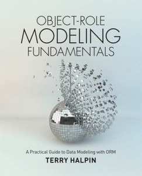

Here you'll find news about ORM tools and courses as well as links to other web resources featuring ORM-related material.
ORM 2 Graphical Notation Summary
A 6-page summary of the ORM 2 Graphical Notation, including examples, may be downloaded from here (153K).
The ORM Foundation
The ORM Foundation is a non-profit organization dedicated to the promotion of the fact-oriented approach to information modeling, and is a major resource site for ORM as well as other fact-oriented modeling approaches.
.NET Show on ORM
The 25th episode of the .NET Show focused on ORM, including an interview with Terry Halpin, Pat Hallock and Dick Barden, and demonstrations of the ORM and database modeling features of Microsoft Visio for Enterprise Architects.
Fact-based Database Design
This one hour webcast by Dr. Halpin summarizes the benefits of the fact-based, ORM approach to database design. To view the webcast, go to searchdatabase.com, go to the Expert Technical Advice section, choose the webcast, and enter your details.
(1) NORMA (Natural ORM Architect) is a new modeling tool under
development that supports the next generation of ORM (ORM 2). Implemented
as an open-source plug-in to Microsoft's Visual Studio .NET, NORMA
requires at least the standard version of Visual Studio (2005 or 2008). For further
details on the ORM 2 graphical notation, see ORM 2 Technical Report
1. A technical preview of NORMA is available on The ORM Foundation as well as SourceForge. A series of laboratory tutorials on NORMA are also downloadable as Microsoft Powerpoint files from the ORM Foundation library. Here is an ORM Foundation link to NORMA, and here is a SourceForge link to NORMA.
The NORMA software is currently in the pre-beta stage, but extensive functionality enhancements and
user-interface improvements are planned for the near future. Currently the
tool supports entry of ORM2 schemas, verbalization of of most constraints,
and code generation (for basic constraints) to a variety of DBMSs
(including SQL Server, DB2, Oracle, PostgreSQL, and MySQL) as well as class
models and XML schema. NORMA is capable of importing ORM schemas entered
in Visio for Enterpise Architects, but the diagrams need to be laid out
manually.
(2) ORM2_Draw Visio stencil and template for drawing ORM 2 schemas. These files are accessible from the ORM Foundation Library. The stencil has recently been significantly upgraded by Andy Carver. See the ReadMe file for instructions. This stencil requires Visio standard edition (or higher), and is for drawing only, not code generation. It is completely separate from the NORMA tool.
(3) Microsoft includes a powerful ORM and logical database modeling solution within its Visio for Enterprise Architects (VEA) product. The 2005 release of of VEA includes some minor upgrades (e.g. a driver for SQL Server 2005 is now included). Visio for Enterprise Architects appears to be included in MSDN Premium subscriptions. The least expensive way to get an MSDN Premium subscription appears to be through a purchase of "Visual Studio Professional Edition with MSDN Premium Subscription." Click here for MSDN subscription information and purchase details.
Details on a COM API to the database modeling engine for this tool are accessible at websites maintained by John Miller (see below), and a free add-on that uses this API to expose data model details in the form of an XML document has been released by Scot Becker (see below).
The first eight of a series of articles on how to use the database modeling solution within Visio for Enterprise Architects were first published in the Journal of Conceptual Modeling (see InConcept entry below). Here are slightly revised versions of these articles:
Microsoft's new
database modeling tool: Part 1 (598K)
Microsoft's new database
modeling tool: Part 2 (447K)
Microsoft's new database
modeling tool: Part 3 (231K)
Microsoft's new database
modeling tool: Part 4 (252K)
Microsoft's new database
modeling tool: Part 5 (255K)
Microsoft's new database
modeling tool: Part 6 (228K)
Microsoft's new database
modeling tool: Part 7 (290K)
Microsoft's new database
modeling tool: Part 8 (505K)
Microsoft has also published revised versions of five of these articles on its MSDN website: Visio-Based Database Modeling in Visual Studio .NET Enterprise Architect: Part 1; Part 2; Part 3; Part 4; Part 5.
A free Visio Viewer to enable users who have not purchased Visio to view Visio files is now available for download.
(4) The former ORM tool known as VisioModeler is freely available as an unsupported product from Microsoft Corporation (as a 25 MB download). The Microsoft download site no longer includes this program, but we are exploring other options to make it available. Models developed in VisioModeler may be exported to Microsoft's current and future ORM solutions. VisioModeler includes an online manual to explain its use. In addition, you may download this basic tutorial on how to use VisioModeler (312k).
(5) A modeling tool caled CaseTalk based on the ORM-dialect known as Fully Communication Oriented Information Modeling (FCO-IM) is available from Bommeljé Crompvoets en partners b.v., headquartered in Utrecht, The Netherlands. To find out more about this tool, click this CaseTalk news page.
(6) A freeware ORM tool known as Infagon is now available from Mattic software. Infagon is based on the same dialect as CaseTalk. To download or obtain more details about this tool, click the Infagon home page.
(7) ActiveFacts is a semantic modeling toolkit under development by Clifford Heath for constructing and querying ORM models. To download or obtain more details about this tool, click the Data Constellation home page.
|  | My latest book on ORM has just been published by Technics Publications. Titled Object-Role Modeling Fundamentals, and aimed mainly at data modeling practitioners, this provides an up-to-date coverage of the latest enhancements to ORM and its concepual schema design procedure. The book also includes lab exercises for using the NORMA tool to create ORM schemas and map them to relational database schemas. The book is available in both print and electronic form from various channels, as well as directly from the Technics Publications website. Anyone who orders the print version of the book from that website can receive a 25% discount by using the coupon code ORMFundamentals. |
 |
For an in-depth treatment of ORM, see Halpin, T. & Morgan, T. 2008, Information Modeling and Relational Databases, Second Edition (ISBN: 978-0-12-373568-3), published by Morgan Kaufmann Publishers, an imprint of Elsevier. This major upgrade of the earlier edition runs to 970 pages and includes loads of new and updated content. Fully updated to ORM 2 and UML 2 and the latest developments in SQL and XML, this book reveals the true power of semantic data modeling (covering ORM, ER, and UML), as well as addressing business process modeling, relational databases, and other modeling topics such as the semantic web. Here is a link to the book on Amazon. |
The first printing of the book included a number of errors, as detailed in the Book Errata.
The following book provides a detailed coverage of how to use Microsoft's high end Visio tool to design databases.
Halpin, T., Evans, K., Hallock, P. & MacLean B. 2003, Database Modeling with Microsoft Visio for Enterprise Architects, Morgan Kaufmann Publishers: San Francisco, ISBN 1-55860-919-9.
The book may be ordered online from various booksellers, including this Amazon website and this Barnes & Noble website.
The first printing of the book included a number of errors, as detailed in the Book Errata.
For a discussion of research topics on UML, see Siau, K. & Halpin, T.A. (eds), UML: Systems Analysis, Design and Development Issues published by Idea Group Publishing. This book includes a chapter providing an in-depth comparision of ORM and UML. Details on this book are available at the book's website.
If you are interested in an early formalization of ORM, and can handle large downloads (18 MB pdf file -- Warning: this takes several minutes to download even on a fast connection), here is a bitmap copy of my PhD thesis. Unfortunately, it was impractical to make this available in text form, as I wrote the thesis in 1989 using good old WordStar and a tailor-made driver to print all the symbols on an old dot matrix printer.
Microsoft added Course 2090 to its official curriculum. This 3-day, instructor-led course is titled "Modeling Business Requirements to Create a Database Using Microsoft Visual Studio .NET Enterprise Architect". It focuses on the use of ORM and Visio for Enterprise Architects to perform database modeling -- see Course 2090 details. Instruction for this course is available from various qualified ORM instructors and Microsoft Certified Trainers.
Before its acquisition by Microsoft Corporation, Visio certified a number of consulting partners to offer training courses in ORM. One of these partners, InConcept Inc., offers 5-day ORM course in Minneapolis (for details, e-mail path@inconcept.com).
 InConcept, Inc. is a
database consulting firm dedicated to excellence in data modeling.
Emphasis is placed on the conceptual model using Object Role Modeling
(ORM). This higher level design is more suitable for review with customers
while the logical and physical models, derived from the conceptual model,
are more suited to the technical staff. Modeling a database at the
conceptual level significantly reduces design errors, thus reducing
overall cost. Using ORM enables the designer and the business user to
communicate and capture business rules more readily and easily.
InConcept, Inc. is a
database consulting firm dedicated to excellence in data modeling.
Emphasis is placed on the conceptual model using Object Role Modeling
(ORM). This higher level design is more suitable for review with customers
while the logical and physical models, derived from the conceptual model,
are more suited to the technical staff. Modeling a database at the
conceptual level significantly reduces design errors, thus reducing
overall cost. Using ORM enables the designer and the business user to
communicate and capture business rules more readily and easily.
The Journal of Conceptual Modeling is a free journal produced by InConcept and dedicated to data modeling, design, and implementation issues. The goal of this publication is to promote communication between professionals, share knowledge, and to educate our readers. The target audience is large: database professionals and developers, end users and business professionals, students and teachers, and anyone else using, developing, or considering development of a database system.
The Business Rules Community is an online vertical community for business rules professionals. Membership is free, and includes access to the Business Rules Journal, which includes regular columns by renowned experts in the business rules movement, as well as feature articles by leading industry professionals.
This journal now includes a regular column by Terry Halpin. This column includes articles on topics such as verbalization of business rules, temporal modeling, and ontology modeling. Some weeks after the publication of one of these articles on the business rules community website, a pdf version of the article is typically made available below. If available, you may download the pdf version. Otherwise, click the Business Rules Community (BRC) website link to view it there.
Modeling Concepts:
Setting the Scene
Verbalizing Business Rules (part
1): PDF file (304K); BRC link.
Verbalizing Business Rules (part
2): PDF file (304K); BRC link.
Verbalizing Business Rules (part
3): PDF file (301K); BRC link.
Verbalizing Business Rules (part
4): PDF file (316K); BRC link.
Verbalizing Business Rules (part
5): PDF file (286K); BRC link.
Verbalizing Business Rules (part
6): PDF file (269K); BRC link.
Verbalizing Business Rules (part
7): PDF file (279K); BRC link.
Verbalizing Business Rules (part
8): PDF file (330K); BRC link.
Verbalizing Business Rules (part
9): PDF file (283K); BRC link.
Verbalizing Business Rules (part
10): PDF file (89K); BRC
link.
Verbalizing
Business Rules (part 11): PDF file (89K); BRC link.
Verbalizing Business Rules (part
12): PDF file (136K); BRC link.
Verbalizing Business Rules (part
13): PDF file (145K); BRC link.
Verbalizing Business Rules (part 14): PDF file (172K).
Verbalizing Business Rules (part 15): PDF file (172K).
Verbalizing Business Rules (part 16): PDF file (172K).
Temporal Modeling (part 1): PDF file (311K).
Temporal Modeling (part 2): PDF file (317K).
Temporal Modeling (part 3): PDF file (130K).
Temporal Modeling (part 4): PDF file (613K).
Temporal Modeling (part 5): PDF file (594K).
Temporal Modeling (part 6): PDF file (630K).
Temporal Modeling (part 7): PDF file (152K).
Ontological Modeling (part 1): PDF file (107K).
Ontological Modeling (part 2): PDF file (83K).
Ontological Modeling (part 3): PDF file (138K).
Ontological Modeling (part 4): PDF file (72K).
Ontological Modeling (part 5): PDF file (109K).
Ontological Modeling (part 6): PDF file (160K).
Further ORM Researchers/Consultants
Professor Sjir Nijssen
Professor Sjir Nijssen is one of the original pioneers of fact-oriented modeling, and in particular the NIAM, and later CogNIAM, versions of this approach. He has been active in conceptual modeling since the mid-1970s,when he led a group of researchers at Control Data in Belgium to develop fact-oriented technology, and has wide experience in both industry and academia. Sjir's major contributions to fact-orientation include introducing the circle-box notation for object types and roles, and adding a linguistic orientation and design procedure for specifying conceptual schemas. He is currently Chief Technical Officer for PNA Group, a consultancy company based in The Netherlands.
Professor Robert Meersman
Professor Robert Meersman is one of the original ORM pioneers, introducing subtyping to the methodology when it was first developed in the Control Data research institute at the Free University of Brussels (VUB). He has been an active researcher in information system semantics and conceptual query technology ever since, and is currently exploring the use of ORM as an ontological basis for the semantic web. He is currently a professor in the department of computer science at the Free University of Brussels, and is the director of its STARlab research laboratory. His home page includes teaching and research information.
Dr Arthur ter Hofstede
Dr Arthur ter Hofstede, a prominent ORM researcher, is an Associate Professor and Leader of the Cooperative Information Systems Special Interest Group within the Faculty of Information Technology at the Queensland University of Technology in Brisbane, Australia. His home page includes teaching and research information, as well as an extensive list of publications, most of which address data modeling issues.
Dr Erik Proper
Dr H. A. (Erik) Proper, holds a research position at the Public Research Centre Henri Tudor, Luxembourg, as well as academic post at the Radboud University of Nijmegen, The Netherlands. His theoretical and industrial research covers many information systems topics, including schema evolution, schema optimization and conceptual query technology. His website includes an extensive list of downloadable research publications, many of them directly related to ORM.
Dr Andy Carver
Dr Andy Carver is an ORM consultant and experienced educator, currently teaching at INTI International University, Malaysia. He recently made substantial upgrades to the ORM 2 Draw stencil for drawing ORM 2 diagrams in Visio.
Ken Evans, MSc
Ken Evans is the Director of The ORM Foundation, a Visiting Senior Research Fellow at the University of Lincoln and a UK based independent consultant. In 2003, Ken co-authored the book Database Modeling with Microsoft Visio for Enterprise Architects. In 2008, Ken completed his Master’s Degree in Information Systems Management with Liverpool University. His dissertation work included an experiment on the relative effectiveness of ORM based application development vis-à-vis other methods such as UML and ER.
John Miller
John Miller is the principal of Perpetual Data Systems, a consultancy based in California. John maintains "Wikis" with details about the unsupported COM API to the database modeling solution in Microsoft Visio for Enterprise Architects. Here is his ORM Wiki, and here is his Viso Modeling Engine Wiki.
Scot Becker
Scot Becker is the principal of Orthogonal Software, a consultancy based in Minneapolis. Scot has released Orthogonal Toolbox, a free add-on to Visio for Enterprise Architects that exposes most of the model details stored in an ORM source model or a logical database model as an XML document. This information is extracted using the COM API to the modeling engine mentioned above.
Scot has now added an informative blog site ObjectRoleModeling.com that includes lots of useful tips and news about ORM and related database modeling topics.
Ken North
Ken North is a database practitioner and author of several publications on databases, including the following articles that discuss ORM: 'Modeling, metadata and XML', 'Modeling, data semantics and natural language' and 'Database design for prime time'.
The 7th International Workshop on Fact-Oriented Modeling (ORM2011) will be held October 19-21 in Hersonissou, Crete, Greece in conjunction with the On The Move Conferences. The first Call For Papers for ORM2011 may be found here.
The Exploring Modeling Methods in Systems Analysis and Design (EMMSAD) series of annual conferences provide a forum to discuss the latest advances in information systems modeling. The EMMSAD 2011 Conference will be held June 20-21 in London, UK in conjunction with CAiSE 2011. The first Call For Papers for EMMSAD2011 may be found here. Details about this EMMSAD conference as well as resources from past EMMSAD presentations may be found here.
The ORM2010 Workshop was held October 27-29, 2010 in Hersonissou, Crete, Greece. Slides for the presentations are accessible in the ORM Foundation Library.
The Data Management Association is an international body of professionals dedicated to improving the management of data. The Enterprise Data World Conference for 2009 was held in Tampa, Florida on April 5-9.
The International Business Rules Forum for 2009 was held in Las Vegas, November 1-5.
The Entity Relationship Conference series addresses all forms of
conceptual modeling (ER, ORM, UML). The ER-2009 conference was held in Gramado, Brazil on November 9-12, 2009.

ORM Home ORM in Detail Modeling Issues
Conceptual Queries UML and ORM Resources
All diagrams on this site were created with Microsoft Visio